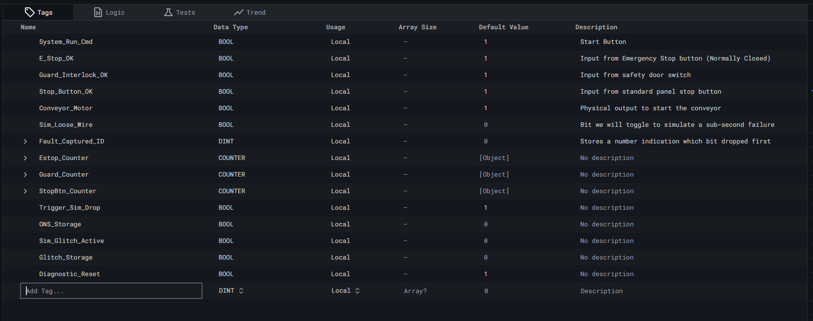
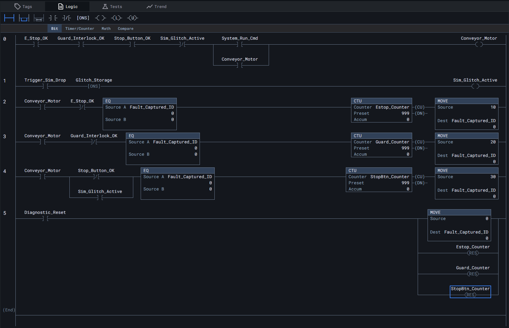

PLC Ghost Bit Catcher Project
Using https://studio.rungs.dev/ to map out a solution for the problem:
"The conveyor is stopping intermittently with no faults. Add bit counters to each run dependent condition to isolate what is stopping the conveyance. After identifying the bit that is opening the output, deep dive on what is causing the bit to drop. For example, a loose connection on a stop button."
Step 1.
Create the tag database that will label our memory bits.

Step 2.
Next, we will create 6 rungs that will visualize a loose wire that is causing the conveyor to stop intermittently.

Step 3.
Simulation.
1. Arm the Safety Circuit
2. Start and Latch the Conveyor
3. Trigger the Ghost Micro-Dropout
4. Run the Master Reset